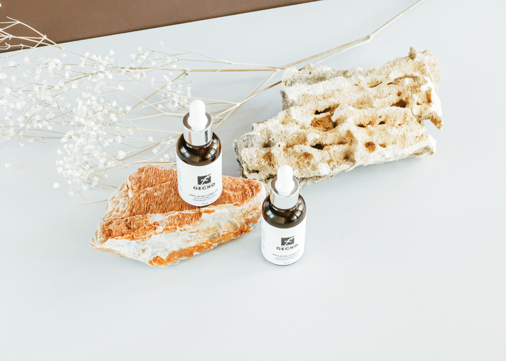

Действие
Себорегулирующее, восстанавливающее, антибактериальное, увлажняющее, противосеборейное, противомикробное, противовоспалительное.
РЕКОМЕНДУЕТСЯ ДЛЯ:
Жирной пористой кожи.
Кожи со следами постакне.
При наличии закрытых камедонов.
Для кожи склонной к высыпаниям, особенно гормонозависимым (гиперандрогения).
Для купирования обострений акне и угревой болезни.
При наличии гнойничковых высыпаний не только на лице.
Для возрастной жирной кожи в период активной работы сальных желез.
ПОСЛЕ ЕЖЕДНЕВНОГО ПРИМЕНЕНИЯ ЭТОГО ПРОДУКТА ВЫ ЗАМЕТИТЕ:
Быстрое купирование воспалительных элементов.
Матовость кожи.
Заметное сужение пор.
Осветление пятен постакне.
Выравнивание тона лица.
Хорошее увлажнение.
ПРИМЕНЕНИЕ:
На очищенную кожу лица или других проблемных зон нанести небольшое количество сыворотки и распределить
лёгкими похлопывающими движениями,
дать впитаться. Сверху закрыть кремом. Использовать 1-2 раза в день утром и (или) вечером.
Возможно локальное применение непосредственно на воспалительные элементы.

Примечание:
Благодаря входящей в состав полиглутаминовой кислоте сыворотка не пересушивает, не стягивает кожу.
Является отличной базой под макияж и служит хорошим дополнением в лечебные протоколы при заболеваниях акне и угревой болезни.
После высыхания сыворотки возможно образование незначительного белесоватого налёта.
Закрытие сверху кремом решает эту проблему.
ПОЛЕЗНЫЕ СОВЕТЫ
ОТ КОМПАНИИ GECKO:
Хранить препараты в прохладном, темном месте.
При использовании не касаться пипеткой поверхности кожи.
В домашнем вечернем уходе сыворотку ANTI-AGE COMPLEX можно
использовать как самостоятельное средство.
После вскрытия флакон хранится от 4 до 6 месяцев.
Все сыворотки прекрасно взаимодействуют между собой, дополняя друг друга.
В домашний уход могут назначаться сразу несколько продуктов компании.
Пример идеального протокола: на день -
POLYGLUTAMIC ACID SERUM под крем, на ночь -
ANTI AGE COMPLEX как самостоятельное средство.
 @@include('show_more_popup.html')
@@include('show_more_popup.html')